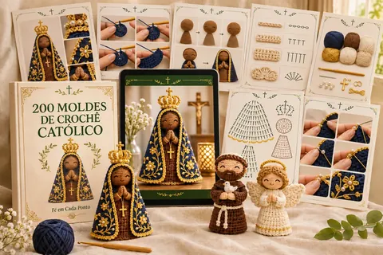

Sua fé ganha forma.
Seu crochê ganha um novo significado.
200 moldes de crochê católico para criar peças especiais, presentear com carinho e preparar suas próximas encomendas.
- 200 moldes em PDF
- Etapas ilustradas
- Consulte no celular
- Pronto para imprimir
Material digital em PDF • Consulte no celular ou imprima
Para quem é este produto?
Para quem já faz crochê e quer explorar temas da fé católica.
Para quem quer presentear com peças religiosas feitas à mão.
Para quem prepara lembranças de batizado, catequese e encontros da paróquia.
Para artesãs que querem ampliar as peças que oferecem por encomenda.
Peças que carregam fé e carinho.
São Francisco de Assis
Espírito Santo
Sagrada Família
Anjinhos e lembrancinhas
Terços e presentes
Imagens e páginas ilustrativas da proposta do produto.
Como você vai receber
Seus arquivos em PDF, reunidos para consultar no seu ritmo.
Acesse os PDFs
Após a confirmação da compra, o acesso será enviado pela plataforma de pagamento.
Abra onde preferir
Consulte no celular, tablet ou computador. Imprima as páginas se preferir.
Escolha sua peça
Separe os materiais e acompanhe o molde durante sua produção.
INCLUÍDOS NO KIT COMPLETO4 bônus para ajudar você a
4 bônus para ajudar você a
apresentar e vender suas peças.
Materiais em PDF feitos para o seu ateliê de crochê católico.
Precifique seu crochê católico
Guia e fichas para calcular materiais, tempo de produção e preço das suas peças.
Tags e cartões católicos
Modelos para imprimir e acompanhar presentes, lembranças de batizado e encomendas.
Catálogo de crochê católico
Modelo imprimível com espaços para registrar peças, valores e opções de encomenda.
Encomendas do ateliê católico
Fichas de pedidos e calendário de temas para planejar prazos e datas especiais.
Sua coleção completa para
começar a criar.
Pagamento único. Sem mensalidade.
200 MOLDES + 4 BÔNUS PARA O SEU ATELIÊ
A COLEÇÃO COMPLETA
Kit Completo
Crie, organize e apresente suas peças com carinho.

200 moldes em PDFPara consultar no celular ou imprimir
- Moldes de santos, devoções e lembrancinhas
- Acesso pelo celular, tablet ou computador
- Arquivos em PDF para imprimir
- 30 dias de garantia
Você também recebe os 4 bônus:
- Guia e fichas de precificação
- Tags e cartões católicos
- Catálogo de crochê católico
- Controle de encomendas e calendário
A coleção com os 4 bônus porR$ 19,90à vista • pagamento único
Quero o Kit Completo + 4 bônusTodos os moldes + os 4 bônus em PDF
Produto digital. Nenhum material físico será enviado.
30DIAS DE GARANTIA
Conheça o material
com tranquilidade.
Você tem 30 dias após a compra para avaliar o conteúdo e solicitar o reembolso pelo canal indicado na confirmação do pedido.
Perguntas frequentes
Vou receber produtos físicos?
Não. O produto e os quatro bônus são arquivos digitais em PDF. As imagens de livros, páginas e peças são apresentações ilustrativas. Fios, agulhas e peças prontas não estão incluídos.
Preciso saber fazer crochê?
É recomendado conhecer os pontos básicos e a leitura de moldes. A coleção não é um curso do zero e não inclui videoaulas.
O que está incluído no kit?
O Kit Completo reúne 200 moldes de crochê católico e os quatro bônus em PDF: precificação, tags e cartões católicos, catálogo de peças e controle de encomendas. O pagamento é único, de R$ 19,90.
Posso consultar pelo celular ou imprimir?
Sim. Abra os PDFs em um leitor compatível no celular, tablet ou computador. Você também pode imprimir as páginas que desejar.
Posso vender as peças que eu fizer?
Sim, a proposta contempla criar peças físicas para presentear ou vender. Os arquivos digitais são para uso pessoal de quem compra e não podem ser revendidos ou redistribuídos.
Como recebo o acesso?
Após a confirmação da compra, a Cakto informará como acessar o material pelo e-mail utilizado no pedido. Confira também as pastas de spam e promoções.
Como funciona a garantia?
Você tem 30 dias a partir da compra para avaliar o material. Solicite o reembolso pelo canal informado na confirmação do pedido.